The Ourang Medan File
This report traces the ghost ship of the Strait of Malacca to the Trieste evening paper that printed the story in October 1940 and identifies the man who wrote it.
In the version told today, the events are these. In February 1948 ships in the Strait of Malacca, the sea lane between Malaya and Sumatra, received a distress message from a Dutch freighter called the Ourang Medan. The message said that all the officers, including the captain, were dead in the chartroom and on the bridge, and that the rest of the crew were probably dead too; after a passage of unreadable signals it ended with the words "I die". An American ship, the Silver Star, found the freighter drifting with no visible damage and sent a boarding party across. The boarding party found the whole crew dead. The bodies lay on their backs with eyes and mouths open and faces turned upward, the ship's dog was also dead, and none of them had a visible wound. Smoke then rose from one of the holds, the boarding party returned to their boat, and the Ourang Medan exploded and sank before anything more could be learned.
The explanations offered since then include fumes from a smuggled cargo of potassium cyanide and nitroglycerine, carbon monoxide from the boilers, nerve gas, and "something from the unknown". The story has been retold in books, magazines and websites since the 1950s.
The story has the shape of a documented event: a named ship, a date, a place, a rescue ship, quoted radio messages. Yet no port of registry, owner, rescue log or inquiry has ever been produced for the Ourang Medan, and no ship of the name has been found in any list of the world's merchant ships. That is the mystery. The two sides of the argument are as follows.
Those who think something real happened point to where the story appeared. The United States Coast Guard printed it in 1952 in its own safety magazine for merchant seamen. A letter about it, sent to the CIA by a member of the public in 1959 and released from the agency's files in 2003, is widely called a "CIA memo". A Hearst Sunday magazine claimed in 1948 that "our research indicates this tragedy did happen" and quoted Lloyd's, the London ship registry, as saying "for the moment it has us sunk as well". And the man who first told the story was a working ship's radio officer whose details of wireless procedure are accurate.
The sceptics answer that the Coast Guard item names no source and no rescue ship, that the "CIA memo" is a private citizen's letter, and that the earliest known printing is neither Dutch nor American. In 2021 the Dutch researcher Theo Paijmans, writing in Fortean Times, the British magazine of strange phenomena, traced the tale to an Italian newspaper of October 1940, where the disaster is dated 1939 and placed in the South Pacific. Later retellings changed the year, the place, the rescuer and the number of dead. Even the sceptics, though, had checked Lloyd's Register, the annual list of the world's merchant ships, by enquiry rather than by reading the volumes, and nobody knew much about the Italian author.
The method of this report was to read every printing of the story in the order in which it appeared. It goes back to the earliest known printing, in the Trieste evening paper Il Piccolo of 16 October 1940, and follows every reprint and rewrite that could be found in newspaper archives in Italy, France, Britain, Hong Kong, the Netherlands, the Netherlands Indies, Suriname, the United States and Brazil, up to the books of the 1950s and 1960s. Every quoted passage was transcribed from the page image and then transcribed again, blind, by a second transcriber as a check. The scanned volumes of Lloyd's Register for 1938/39 to 1950, its quarterly returns of ships lost for 1946 to 1949, the Dutch fleet databases and the Singapore press were searched in full text for the ship, and the searches are saved so that anyone can repeat them. The author was traced through official gazettes, city directories, civil registers and his own later letters. Each detail of the modern story was then dated to the printing that introduced it.
What came out is that the story was written by one man, Silvio Scherli, a ship's radio officer from Trieste, the Italian port at the head of the Adriatic. He published it in 1940 as an event of 1939, published a sequel in 1941, and in 1948 sold both to a Dutch weekly with the year changed to 1947. The Dutch editors printed a note that they had no information beyond his personal assurance. The Strait of Malacca, the date February 1948 and the Silver Star were added later by American and German writers. None of the registers searched lists a ship of the name, and no report of the loss independent of the story has been found in any archive. The verdict is that the story was invented, with about 85 percent confidence; most of the remaining chance is that a real incident under another name gave Scherli his idea. The percentages are judgments about the weight of the evidence. The reasoning behind them, and what would change them, follows.
Fabricated: the story was written by Silvio Scherli in Trieste in 1940 and published as fact.
Evidence: strong. The evidence leaves little room for another answer. The verdict is still a reading of the documents, and a new document could change it.
Silvio Scherli (about 1901 to 1985) was a ship's radio officer and freelance writer of Trieste. The earliest printing known is his signed article in the Trieste evening paper Il Piccolo of 16 October 1940, describing a disaster of "last November", 1939, in the South Pacific. The Associated Press (AP), the American news agency, cabled it from Trieste to the British press in November 1940. In January 1948 Scherli placed the same story again with the Dutch weekly Elsevier's Weekblad, now as a first-person eyewitness account of June 1947, and the Dutch editors printed it with the warning that they had nothing but "the author's personal assurance" and that the obvious conclusion was "a fantasy, an engaging romance". The details that later made the story look like a documented event were added by later writers: the Strait of Malacca by an American Sunday supplement in October 1948 and the US Coast Guard's house magazine in 1952, the date "February 1948" by the Coast Guard, the rescue ship Silver Star by a German pulp booklet in 1954. No ship of that name exists in the fifteen digitised volumes of Lloyd's Register for 1938/39 to 1950, in the Dutch and Netherlands Indies fleet records, or in the register's quarterly returns of ships lost, and the Singapore press, which reported the Strait's minor shipping incidents of those years, never mentioned it. The registers show only that no ship of that name existed. The case against any real event behind the story rests on the texts themselves: the author's shifting dates, places, finders and casualty counts, the re-used photographs, and the absence of any independent report in any archive. Paijmans stated that case in outline in 2021; the Trieste originals allow it to be stated in detail.
- Invented outright~85%
- A real incident under another name, altered beyond recognition~14%
- Genuine as told<1%
The bars are a chart made for this report from its own judgments, set out here and in section 8. Confidence that the story as told, in any of its dated versions (November 1939, June 1947, February 1948), records the loss of a real ship: below 1 percent. A named steamer with a crew of forty would appear in Lloyd's Register and in its returns of ships lost, and no such entry exists. The 14 percent allows for the possibility that a real derelict or shipboard poisoning, under another name, was heard of by Scherli at sea and altered beyond recognition in his telling. Register searches cannot close that residual: the digitised volumes are incomplete for the war years, and a real event behind the story (a kernel, as the sections below call it) need not have been a total loss at all. The limit on that residual comes from the texts. The story's structure is the Mary Celeste pattern of sea fiction (the Mary Celeste was found under sail with no one aboard in 1872; the two-stage distress call, the unwounded dead, the explosion that ends the search, the ship that sinks "taking her secret with her"); the author wrote a whole series of such dramas as reportage; he re-used the same photographs for events eight years apart; and nothing in any version has ever been matched to a documented incident. The figures are judgments rather than measurements. They state how much weight is given to those textual points against the one consideration on the other side, that the author was a working ship's radio officer (section 8.1). If that consideration is given more weight, the residual could be put at a quarter without changing the verdict itself; the evidence that would change the verdict is listed in section 8.2.
Section 1 gives the story as it circulates today and where that version comes from. Section 2 sets out the five findings behind the verdict. Section 3 lists every printing of the story from 1940 to 1965, with what each added and whether it was read for this report. Section 4 quotes the 1948 Dutch texts, on which the modern legend rests, in the original with translations. Section 5 documents the register and casualty-return searches. Section 6 tabulates where each detail of the story first appeared and who added it. Section 7 is the life of the author, Silvio Scherli, from official and press records. Section 8 gives the strongest case for a real event and the evidence that would overturn the verdict. Section 9 says what here is new and what earlier investigators had already established. Section 10 lists what was not searched. Section 11 is the sources, with the identifiers needed to open each one.
1. The story as it is usually told
The version that circulates today comes from the US Coast Guard's Proceedings of the Merchant Marine Council, its monthly safety magazine, of May 1952, as retold in the books of the American broadcaster Frank Edwards (1956), the American writer Vincent Gaddis (1965) and the British writer Roy Bainton (1999). In February 1948, it says, a Dutch freighter in the Strait of Malacca sent this message and was not heard from again:
The American ship Silver Star found her drifting, boarded her, and saw the crew "sprawled on their backs, the frozen faces upturned to the sun with mouths gaping open and eyes staring"; even the ship's dog was dead. Fire broke out in No. 4 hold, the boarding party left the ship, and the ship exploded and sank. Cargoes of potassium cyanide and nitroglycerine, carbon monoxide from the boilers, nerve gas, and "something from the unknown" have all been proposed. The Coast Guard item names no source and no rescue ship; the Silver Star does not appear in it.
2. Why the verdict
The verdict rests on five findings. Each is tied to a checkable source in section 11.
2.1 The "1947" eyewitness account had already been published in 1940
The earliest printing anyone has found is Scherli's own article in Il Piccolo delle Ore Diciotto, the Trieste evening paper, on 16 October 1940 [S1]. The Associated Press picked the story up in Trieste five weeks later. The Yorkshire Evening Post, a Leeds evening paper, printed it on Thursday 21 November 1940 under the dateline (the place-and-date line at the head of a wire report) "TRIESTE, Thursday" as "an eye-witness account of the last phase of a mysterious sea tragedy" brought to Trieste "by a merchant marine officer who went to the rescue of the steamer Ourang Medan off the Solomon Islands last November", that is November 1939 [S4]. The London Daily Mirror ran the same AP text the next day, and the Hong Kong China Mail reprinted it on 27 February 1941. The Daily Mirror and China Mail pages were read from page images (figures 7 and 8). The distress messages in this first version are:
The French weekly 7 Jours of 29 December 1940 gives the date and place precisely: "C'est le 13 novembre 1939", "à 200 milles au sud-est du groupe des îles Salomon", the finder "le torpilleur américain n° 716", and the ship burning all night until "à l'aube, le torpilleur américain arriva" [S8]. Gallica, the French national library's digital archive, returns those phrases from page 4 of the issue in its full-text search. The Trieste original, read in full from the page scan and the archive's own text layer, the machine-read text behind the scan (figures 1 to 3), already has every one of these elements: "La notte del 13 novembre 1939 a circa duecento miglia a sud-est del gruppo delle Salomone mentre si navigava verso il canale di Panama", and "una torpediniera americana e precisamente la «W 716»" [S1]. Paijmans was told by the Coast Guard in 2015 that no such boat existed and that the designation was not in use [S37].
In January 1948 the same story, with the same sequence of events, reappeared in Elsevier's Weekblad, now as the first-person log of an unnamed crewman whose ship was "midden Juni 1947 ongeveer 400 zeemijlen Zuidoostelijk van de Marshall eilanden" [S12, S13]. A ship lost in June 1947 cannot have been reported lost in November 1940. The 1948 text is a rewrite of the 1940 one: the same two-stage distress call (first a doctor by short wave, then the officers dead, breaking off mid-sentence), the same flagless derelict listing to starboard, the second officer's body on the bridge, the unwounded dead "at their posts", the explosion from a hatch that ends the search, the night-long fire and the morning sinking. What changed is the year (1939 to 1947), the place (Solomons to Marshalls, 1,300 nautical miles apart), the body count (12 to 22), and the additions of a dead dog, a wireless operator dead at his key, and the words "ik sterf", "I die".
2.2 The editors said in print that they had nothing but the author's word
When the second instalment appeared in the Netherlands on 14 February 1948 and in Semarang, on Java in the Netherlands Indies, on 28 February, the editors boxed a disclaimer beside it: the author, Silvio Scherli, was staying in Trieste, vouched for the story's authenticity, and they had nothing else to go on. With the final instalment on 13 March, De locomotief, the Semarang daily that reprinted the serial, concluded, under the sub-heading "Fantasie of Realiteit?", that the obvious reading was fiction (section 4, figures 11 and 12). The American Sunday supplement that carried the story to millions of readers in October 1948 added that the Dutch editor "had bought the story and picture from the Italian officer and the latter had vanished" [S21].
2.3 The details that make the story checkable today were added later by others
The Strait of Malacca first appears with the feature writer Win Brooks's "Secrets of the Sea" in The American Weekly, the Sunday magazine of the Hearst newspapers, of 10 October 1948, and there only as the route out of Medan; Brooks keeps the disaster in the South Pacific in June 1947 [S21]. The only Malayan element in any version by Scherli himself is a departure from Singapore, bound for Western Australia, in his sequel of February 1941 [S9]. The Coast Guard editorial of May 1952 moved the scene itself into the Strait and dated it "February 1948", the month of the Dutch reprints, while copying Brooks's "50 miles from her indicated position", "No. 4" hatch, dead dog and "we float" [S23]. The Silver Star and the City of Baltimore first appear in the German pulp writer Otto Mielke's 32-page booklet Das Totenschiff in der Südsee (Munich, 1954), which gives no sources, and reached English readers only through Bainton's 1999 article [S26, S31]. The potassium cyanide comes from the 7 Jours sequel of September 1941 and the Dutch weekly Panorama of January 1955; the 1948 instalments say sulphuric acid and nitroglycerine [S11, S18, S27]. Section 6 tabulates this.
2.4 No ship of that name in five record systems, and no independent report of the loss
- Lloyd's Register of Shipping. Lloyd's Register is the annual list of the world's merchant ships of 100 tons and over, published in London; the Lloyd's Register Foundation has scanned the old volumes. Full-text search of the fifteen digitised volumes for 1938/39 to 1950 (steamers and motor ships; sailing vessels and motor vessels), plus 1930 and 1936 as controls: no "Ourang", "Orang" or "Oerang Medan" under any spelling or OCR variant (OCR is the machine reading of a scanned page, which misreads letters), where alphabetical neighbours (Ouragan, Ourania) and hundreds of Netherlands and Netherlands-Indies vessels are present [S32].
- Lloyd's Register Wreck Returns, 1946 to 1949. These are the register's quarterly lists of ships lost or broken up. Every quarterly return read: no unexplained loss with a dead crew anywhere; the seven Dutch-flag total losses of 1947 and 1948 are all identified and unrelated [S33].
- Dutch and Netherlands-Indies fleet records. Marhisdata, the Dutch maritime-history database of every Dutch-flag merchant ship, and the fleet list of the KPM, the Dutch inter-island shipping line of the East Indies: no vessel of the name. The real ships called Medan are a Rotterdamsche Lloyd steamer scrapped in Kobe in 1930, an 1889 KPM steamer sold to Japan in 1904, and two small craft named in 1947 that are still afloat in the 1950 Register [S34].
- The Singapore and Malayan press, 1940 to 1949. NewspaperSG, the National Library of Singapore's newspaper archive, in full text (Straits Times, Singapore Free Press, Malaya Tribune, Morning Tribune, Straits Budget, Pinang Gazette) contains no "Ourang" in the decade, no "Silver Star" in a shipping context in 1947 or 1948 (278 hits, all racehorses and medals), and no dead-crew derelict, poisoned crew or chemical-cargo explosion in the Strait, in an index that does record the Strait's minor shipping incidents of those years [S35].
- The Dutch news agency. The radio bulletins of the ANP, the Dutch national news agency, for 1937 to 1984, digitised on Delpher, the Dutch national newspaper archive, never mention the ship; the story appeared on feature pages and never in news bulletins [S36].
The one ship in the legend that did exist was in a different ocean at the time. Lloyd's Register 1947 lists Santa Juana "(ex Silver Star-47, ex Santa Cecilia-46)", 6,507 tons, built at Kearny, New Jersey in 1942 for the Grace Line of New York (figure 13). She bore the name Silver Star only from 1946 until the first half of 1947, traded for Grace Line between the Americas, and never appears in an Asian shipping column [S32]. A rescue by the Silver Star in February 1948 is impossible, because she no longer bore the name; a rescue in June 1947 would require a ship trading between the Americas to have been in the Pacific; and her name was not attached to the story until 1954.
What the registers can and cannot show. The Register Book lists every merchant vessel of 100 tons and over, of every flag, and the casualty returns every total loss; a steamer with a crew of forty, lost with all hands in November 1939 or June 1947, would appear in both, and volumes that record the loss of a 199-ton Dutch coaster in 1947 and the two small Dutch and Netherlands Indies craft named Medan in 1947 would have recorded a freighter of her size. Her absence under that name, in every spelling, therefore shows that the ship as described did not exist, and it shows nothing more than that. The digitised run is incomplete for 1940 and for 1943 to 1946, OCR is imperfect (the control searches are saved with this report), and a real incident that gave Scherli his idea need not have been a total loss or have been reported at all, and would in any case have concerned a ship of another name. For that reason the residual probability in the verdict is set by the texts rather than by the registers, which exclude only the possibility that the kernel was a ship called Ourang Medan. A real kernel is unlikely because the author contradicts himself between his versions, because he re-used the same photographs for events eight years apart, and because no contemporary news source mentions any such event.
2.5 The story contradicts itself
- The 1948 distress message gives the position as "20 gr. Westerbreedte 179 gr. Oosterlengte", twenty degrees of west latitude, which does not exist. Read as 20° S 179° E, the spot is about 1,650 nautical miles from the Marshall Islands, where the narrator says he was 400 miles away.
- The lone survivor of the 1948 sequel is nursed by a Franciscan missionary on "the island of Toangi, belonging to the Marshall Islands" (so spelled). Taongi (Bokak) is an uninhabited, waterless atoll with no mission.
- The rescuer is an American torpedo boat "W716" in 1940, an anonymous British merchant ship in the AP cable, an anonymous ship with an Italian officer in 1948, and the Grace Line's Silver Star in 1954. The dead number 12 "of a crew of about 40" in 1940 and 22 in 1948.
- In the 1940 AP version the rescue ship relays the call and "medical stations in Germany, Rome and France replied", a detail that fits wartime Trieste better than the Solomon Islands, where the event is supposed to have taken place.
- Scherli's own versions disagree with one another. The SOS is heard on "la notte del 13 novembre 1939" in October 1940 and on "il giorno 19 novembre 1939" in his sequel of February 1941, where the ship has become "la nave australiana" and the first deaths fall on "il giorno 11 ottobre"; the explosion comes from "la boccaporta numero due" in 1940, from "la stiva n. 4" in 1941 and from "Luik IV" in 1948; the 1941 sequel is datelined "Viti Levu (Figi)", Fiji's main island, under a headline that has the survivor saved by "the natives of an island of Malaysia", some 5,000 miles away [S1, S9, S13].
3. The paper trail, 1940 to 1965
Status marks: seen means a digitised copy or page image was read for this report; reported means the item is known from a prior investigator's citation and could not be opened; snippet means confirmed through a library's full-text search API without the page itself; new marks a printing that earlier investigators had not read (section 9.1).
- 16 Oct 1940Il Piccolo delle Ore Diciotto, Trieste, "Le ultime notizie", p. 3, "Il mistero dell'«Ourang-Medan»", signed Silvio Scherl-Scherli, with two photographs captioned "…sul ponte di comando trovammo il corpo del secondo ufficiale…" and "L'«Ourang-Medan» sta per inabissarsi". Night of 13 November 1939, 200 miles south-east of the Solomons, bound for Panama; twelve dead, three of them deck officers, of a crew "of at least forty"; the finder "una torpediniera americana e precisamente la «W 716»"; the ship "l'anno prima trasportava un carico di forzati dall'Inghilterra all'Australia"; the explosion from "la boccaporta numero due"; the closing line: of the mystery "non restava che una collezione di fotografie, molte delle quali passate in esclusività alla Marina da guerra americana". seen page image and text layer, figures 1 to 3 [S1].
- 26 Oct 1940Il Piccolo delle Ore Diciotto, p. 3, the editors' note above the second of Scherli's "I drammi del mare" (the mutiny on the "Elenor Synt", dated 21 April 1939): the first, "Il mistero dell'Ourang Medan", "è stato riprodotto da tutti i giornali del Regno e sarà pubblicato pure negli Stati Uniti e sui giornali di altri Paesi", with "Il panfilo Johore" and "L'affare della Geo W. Macknight" to follow. The editors announced publication abroad before the AP cable of 21 November. seen page image and text layer [S6]. new
- 18 to 29 Oct 1940Badische Presse (Karlsruhe) and three Vienna papers (Welt-Blatt, Illustrierte Kronen-Zeitung, Volks-Zeitung); one names "Piccolo di Trieste" as its source. reported [S2, S3].
- 21 Nov 1940Yorkshire Evening Post, p. 5, "Mystery S O S from Death Ship", Associated Press, dateline Trieste; incident "off the Solomon Islands last November". seen from clipping images [S4].
- 22 Nov 1940Daily Mirror, p. 11, "Crew Dies In S O S Mystery", AP. seen page image, figure 7 [S5].
- 8 Dec 1940L'Illustrazione Italiana, Milan, vol. 67 no. 49, p. 846, "Il mistero dell'«Ourang-Medan»", signed Silvio Scherl-Scherli: the Trieste text reset with small variants, with the bridge photograph and a different second picture of bodies on the deck. seen page image, figure 4 [S7].
- 29 Dec 19407 Jours (Lyon), no. 13: "C'est le 13 novembre 1939 … à 200 milles au sud-est du groupe des îles Salomon … le torpilleur américain n° 716". snippet Gallica full-text search [S8].
- 5 Feb 1941Il Piccolo delle Ore Diciotto, p. 3, unsigned, set as a wire report under the dateline "VITI LEVU (Figi), 5": "Luce sulla misteriosa fine del piroscafo «Ourang Medan». Il ritrovamento di un superstite della tragica nave salvato dagli indigeni di un'isola della Malesia". A white man picked up dying in a lifeboat marked Ourang Medan, sheltered a year by a Fijian tribe and brought before the Governor in December 1940, tells his story: sailed from Singapore for Western Australia "con un carico di 2500 casse il cui contenuto non era precisato sulla polizza di carico o meglio era falsato", a captain who owned the ship, a Malay and Indian crew, orders to carry on to Panama, the bosun dead at a hold ventilator on "11 ottobre", four men dead patching "il fondo della stiva n. 4" with a torch, rats pouring from the holds, "tutti morti, tutti morti", three Malay companions dying in the boat; the Governor's inquiry finds a clandestine consignment of "spiriti di nitroglicerina", potassium cyanide "solido e liquido" and "numerose casse di acido solforico" loaded at Singapore. The core of the later "chemical cargo" and "sole survivor" strand is here, sixteen weeks after the first article and seven years before the Dutch sequel; the Franciscan and the atoll are 1948 additions. seen page image, figures 5 and 6 [S9]. new
- 27 Feb 1941The China Mail, Hong Kong, p. 8, verbatim AP reprint. seen page image, figure 8 [S10].
- 7 Sep 19417 Jours, no. 45, "Le mystère de l'«Ourang-Medan» est éclairci": the French version of the 5 February sequel ("« Sept Jours » a raconté, il y a quelques mois, cette dramatique et fantastique histoire"), with the crew "morts asphyxiés, un par un", the cargo named as nitroglycerine, potassium cyanide and sulphuric acid, and a real name for verisimilitude, "Sir Harry Charles Luke, gouverneur anglais des îles Fidji", who did govern Fiji from 1938 to 1942. snippet Gallica full-text search; details from the blogger Alexander Butziger (2013) and Paijmans 2021 [S11].
- 17 Jan 1948Elsevier's Weekblad, Amsterdam, p. 16, "Brand in Luik IV. Raadselachtige ondergang van de Ourang Medan", two photographs; sequels 14 Feb p. 4 and 28 Feb p. 19. Not digitised. reported Paijmans 2021 [S12].
- 24 Jan 1948Leekster courant, a weekly of Leek in the Dutch province of Groningen, p. 1, "Mysterie, dat de zee nimmer zal prijsgeven", "aldus een verslaggever van Elsevier's Weekblad". This is the earliest Dutch-language printing in any open archive. seen figures 9 and 10 [S13]. new
- 3 Feb, 28 Feb, 13 Mar 1948De locomotief, Semarang, three instalments with the editors' disclaimers. seen figures 11 and 12 [S14, S16, S18].
- 16 Apr 1948De West, Paramaribo (Suriname): a reader "picked up a report" on the Wednesday evening (from a radio broadcast) that the Dutch motor ship "Orang Medan" had sunk in the Pacific after an explosion with 22 aboard. This item shows the story circulating as news. seen [S19].
- 24 Jul 1948Obersteirische Volkszeitung, Leoben (Austria). reported [S20].
- 3 and 10 Oct 1948The American Weekly (the Hearst Sunday supplement; 3 October in the Atlanta Constitution and other papers, 10 October in the Albany Times-Union, Chicago Herald-American, Baltimore American and Oregonian), Win Brooks, "Secrets of the Sea": credits "Elseviers Weekly, last January"; first mention of Medan and the Strait of Malacca (as the route); disaster still in June 1947 in the South Pacific; "an Italian officer". seen [S21].
- 31 Oct 1948L'Illustrazione del Popolo, a Turin illustrated weekly, by Ennio Garieri. reported [S22].
- 27 May 1950Revista da Semana, Rio de Janeiro, "Navio fantasma", text by Wolf Kneip, "narração de Silvio Scherli": a Portuguese translation of the Elsevier version. seen [S24].
- May 1952Proceedings of the Merchant Marine Council, US Coast Guard, vol. 9 no. 5, p. 107, unsigned editorial "We Sail Together": "February 1948", "Straits of Malacca", "we float", "I die", "No. 4 hold", the dog, no source. The issues of March to December 1952 and January to March 1953 were checked and contain no correction or letter. seen [S23].
- Jun 1953Fate, the American magazine of the paranormal, Robert V. Hulse, "Death at Sea", citing the Proceedings. reported [S25].
- 1954Otto Mielke, Das Totenschiff in der Südsee. Dampfer "Ourang Medan" (Anker-Hefte, Moewig, Munich), 32 pp.: SOS on 27 June 1947 received by the City of Baltimore and the Grace Line's Silver Star; survivor "Jerry Rabbit" landed on Taongi; cyanide and nitroglycerine. This is the first appearance of the Silver Star in any version. reported [S26].
- 7 Jan 1955Amigoe di Curaçao summarising the Dutch weekly Panorama: still "somewhere on the Pacific", cargo now potassium cyanide. seen [S27].
- 1955 to 1959the American UFO writer M. K. Jessup, The Case for the UFO (1955); Frank Edwards, Strangest of All (1956), who cites "the report filed with the Proceedings" and adds "Dutch and British radio centers" and "rescue craft from Sumatra and Malaya"; C. H. Marck Jr.'s letter to the CIA of 5 December 1959, a private citizen's pastiche of Edwards and the Proceedings, released under the Freedom of Information Act in 2003 and often mislabelled a "CIA memo". seen [S28, S29].
- 1965 to 1999Vincent Gaddis, Invisible Horizons (1965), citing only the Proceedings; Bainton, "A Cargo of Death", Fortean Times 125/126 (1999), who imports the Silver Star and City of Baltimore from Mielke via Theodor Siersdorfer, a professor in Essen. seen [S30, S31].

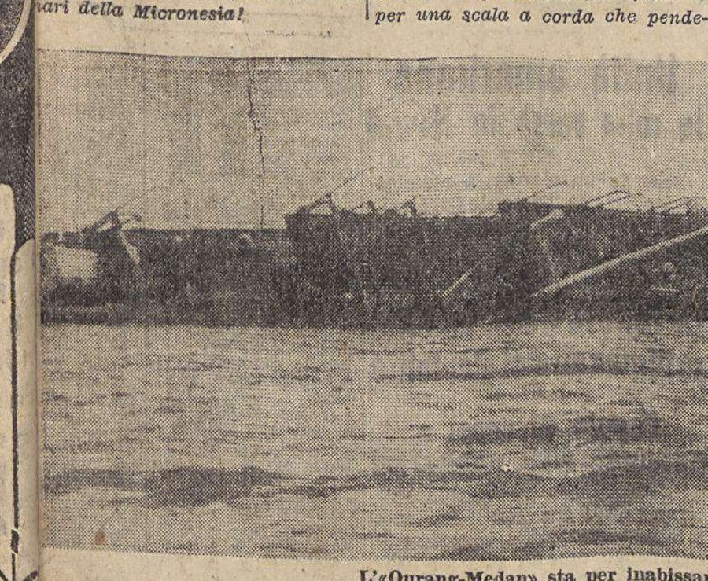
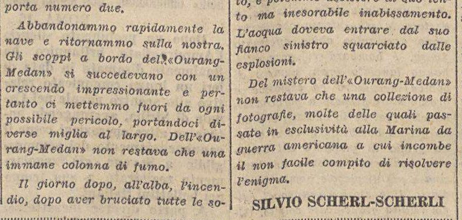
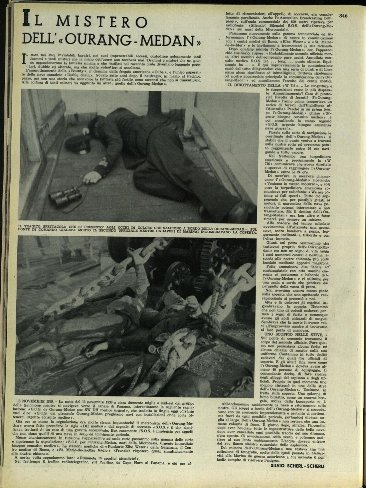
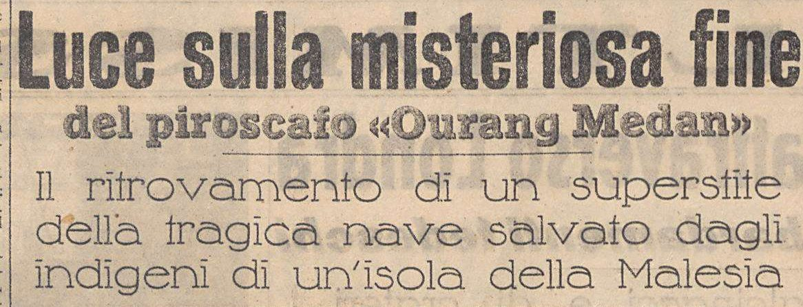
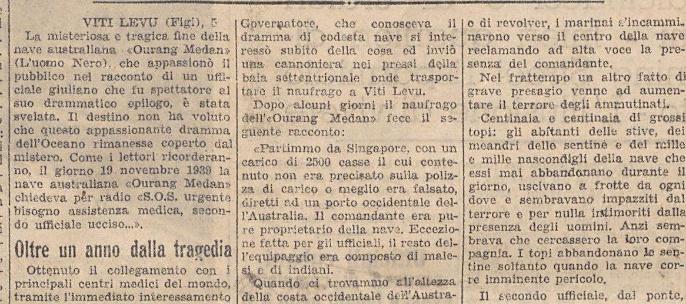
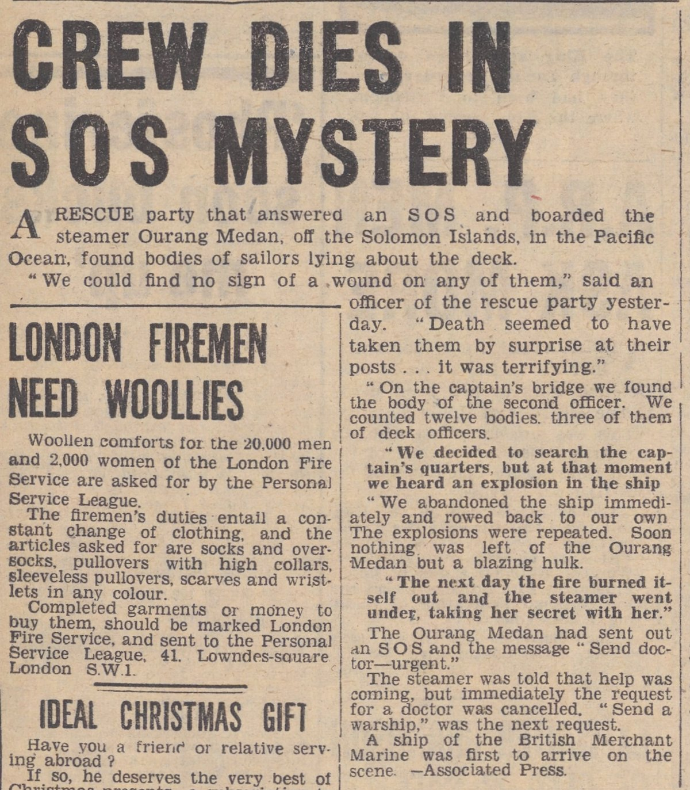
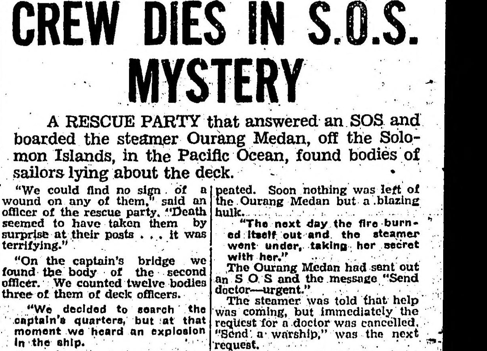
4. What the 1948 Dutch texts say
Later writers treat the Dutch phase as documentary, so its texts are given here in the original. Delpher, the Dutch national newspaper archive, serves the article text and the page scans without a key; the Dutch below is transcribed from the scans, with OCR errors corrected against the page images. Elsevier's Weekblad itself is not digitised; its text is known from these reprints and from Paijmans, who read the issues.
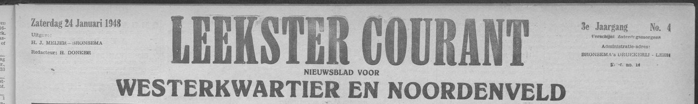
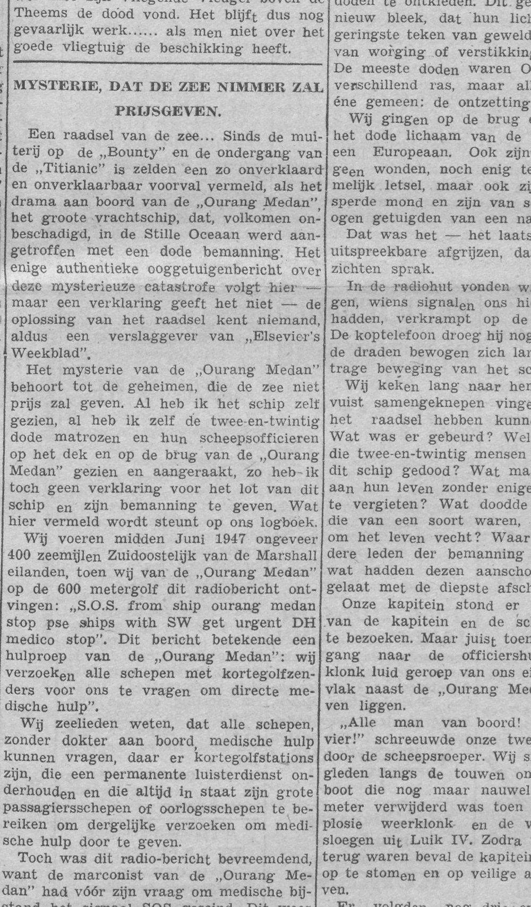
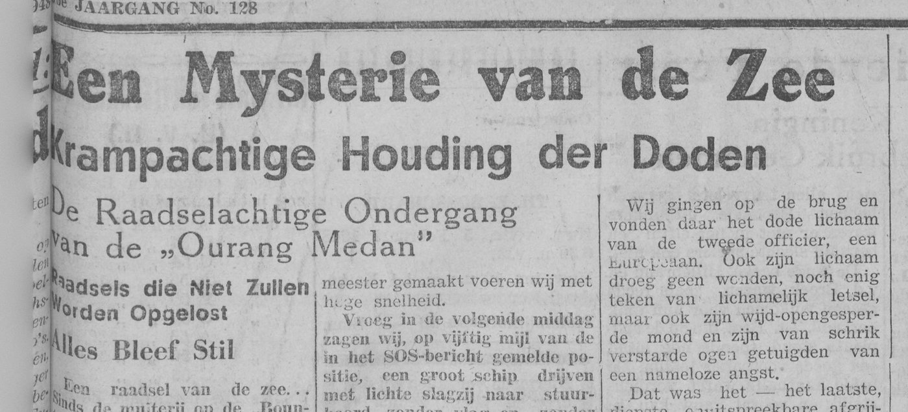
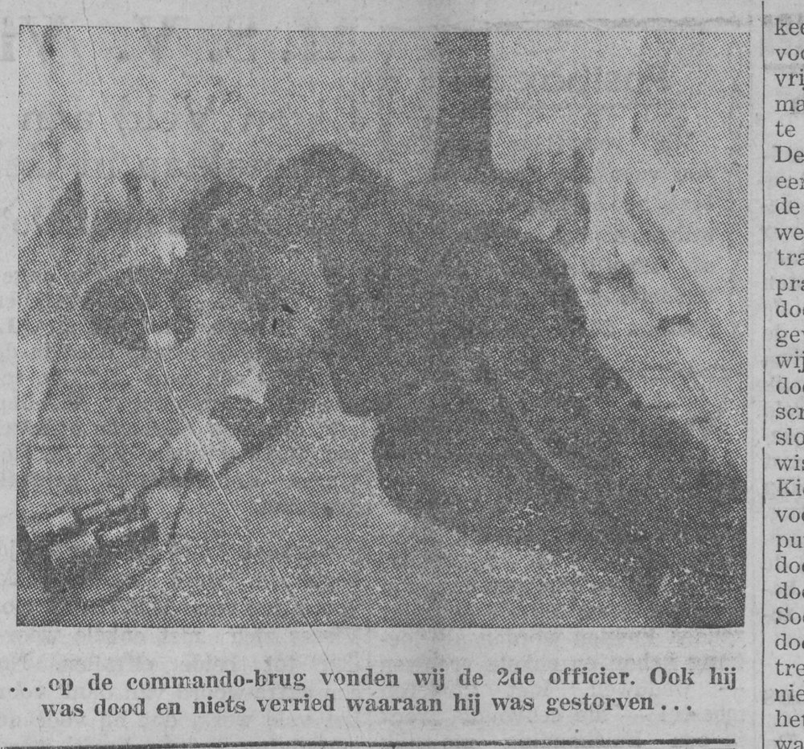
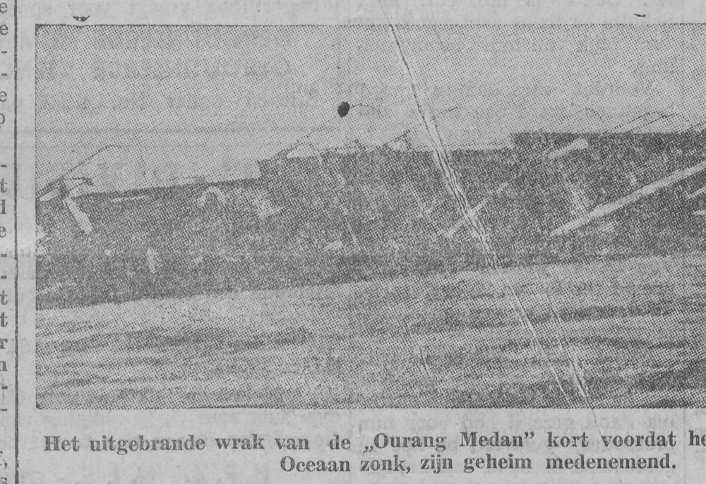
4.1 The eyewitness instalment (Elsevier's Weekblad 17 January; Leekster courant 24 January; De locomotief 3 February 1948)
4.2 The sequel and the disclaimers (Elsevier's Weekblad 14 and 28 February; De locomotief 28 February and 13 March 1948)
In the second instalment the rescue ship drops out and the narrative follows a lone survivor: a lifeboat reaches "het eiland Taongi, behorend tot de Marshall-eilanden", where a Franciscan missionary nurses a dying, nameless castaway for five days and writes down his story. He had signed on at Shanghai, without papers, under a captain who did not give his real name; the ship, "naamloos als wij", loaded 15,000 crates from camouflaged huts in a Chinese river mouth, bound supposedly for Costa Rica and then Panama for scrapping. On the fifteenth day rats poured out of the bunker, the crew sickened with yellow eyes and stomach pains, the second officer died on the bridge, and the captain went below cursing "and I did not see him again". In the third instalment the captain's papers are found: a passport "afgegeven door de Chinese autoriteiten te Shanghai, met de naam Alfred Schutzwald uit Hamburg", and a pro-forma invoice for "15.000 kisten en vaten zwavelzuur, nitro-glycerine in vloeibare vorm en nog andere chemicaliën", with the note that the nitroglycerine must not be stowed with the sulphuric acid and that "de emballage is niet bestemd voor vervoer over zee". The narrator, the first mate, leaves in the one lifeboat with six men; the wireless operator stays aboard "because I don't think it is that dangerous". Beside each instalment the editors printed a box.
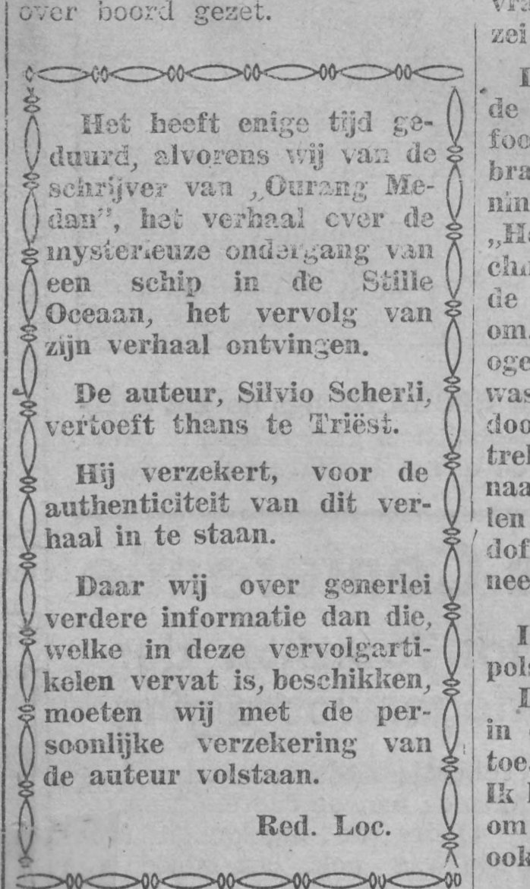

Two conclusions follow from these boxes. First, the Dutch editors, the only people who dealt with Scherli directly, had no document, no name for the rescue ship, no survivor's name and no port of registry, and they said so in print. Second, the story was never a news report in the Netherlands or the Indies: it ran as an illustrated feature serial, and the Dutch news agency's bulletins do not mention it [S36]. The Paramaribo item of April 1948, in which a reader "caught" a broadcast that the "Orang Medan" had sunk, shows the serial being retold on the radio as though it were news [S19].
The last instalment ("Einde", De locomotief 13 March 1948) gives the survivor's fate. He is a nameless German first mate signed on at Shanghai; the captain's papers show a passport "afgegeven door de Chinese autoriteiten te Shanghai, met de naam Alfred Schutzwald uit Hamburg" and an invoice for "15,000 cases and drums of sulphuric acid, nitroglycerine in liquid form and other chemicals" loaded in China; the mate reaches Taongi in a lifeboat after twelve days, confesses to the Franciscan and is "begraven bij de oude palm op het kerkhof achter het missiegebouw", buried by the old palm in the cemetery behind the mission building [S18]. Every one of these details is a variation on the Fiji survivor of Scherli's own Trieste sequel of February 1941 (section 3): the falsified cargo of 2,500 cases has grown to 15,000, Singapore has become Shanghai, the Fijian tribe a mission on an atoll that has never had one, and the survivor who told his story to a governor in 1941 tells it to a priest in 1948 and then dies. The Brazilian reprint of 1950 even gives the priest a name, "padre Christ" [S24]. No record of an Alfred Schutzwald, of a Father Christ or of a mission on Taongi has been found.
5. The registers and the casualty returns
Earlier investigators reported "no record at Lloyd's" on the strength of enquiries. Because the Lloyd's Register Foundation has since put the Register Books online, the check can now be done as a documented full-text search, volume by volume, and repeated by anyone.
| Record | What was searched | Result |
|---|---|---|
| Lloyd's Register of Shipping, Register Book | Internet Archive full-text files of the Lloyd's Register Foundation scans: HECROS1939ST, HECROS1939SV, HECROS1940SV, HECROS1941ST, ros-1941-sv, 1942-st-combined, HECROS1946SV, HECROS1947ST, HECROS1947SV, HECROS1948ST, HECROS1948SV, HECROS1949AL, HECROS1949MZ, HECROS1950AL, HECROS1950MZ; controls 1930 steamers and HECROS1936ST. Patterns: Ourang, Orang, Oerang, O?rang, 0urang, Medan, Median, Medau, Meden. Not online: the 1940 steamers volume, the 1942 sailing-vessels volume, and the 1943 to 1946 editions apart from the 1946 sailing-vessels volume. | No "Ourang Medan" or variant in any volume. OCR controls present in every volume (Paketvaart, Batavia, Deli, Van Heutsz, Plancius; "Netherland" 617 to 781 times per steamer volume). Real Medans: a 250-ton Dutch motor trawler at IJmuiden (ex Trimount, renamed 1947) and a 207-ton Netherlands-Indies government motor lighter (named January 1947), both still registered in 1950; neither was a freighter and neither was lost [S32, S34]. |
| Lloyd's Register Wreck Returns 1946 to 1949 | Quarterly returns of all vessels of 100 tons and over lost or seriously damaged, archive.org item HECCR1890, every 1947 and 1948 entry read; "explosion" entries listed separately. | No Medan or Ourang. Dutch-flag total losses 1947 to 1948: Brastagi, Holland, Uiver, Amstelstroom, Kralendijk, Melchior Treub, Aik, all identified and unrelated. Only Sumatra and Singapore-area entries: the tug Grassland (broke tow, first quarter 1947) and Kiang Peng (sunk by aircraft off Pekanbaru, 31 Dec 1948) [S33]. |
| Marhisdata (Dutch merchant fleet database) and the KPM fleet list | Name searches for Medan, Orang, Ourang, Oerang; ship pages 8713, 4172, 18019. | No Orang/Ourang Medan ever under the Dutch or Netherlands-Indies flag. Medan (1889, Deli Maatschappij then KPM, sold to Japan 1904); Medan (1910, Rotterdamsche Lloyd, 5,933 tons, scrapped Kobe 18 July 1930); the two 1947 small craft above [S34]. |
| Lloyd's Register 1947 to 1950, the Silver Star | Entries 88972 and 89171 (1947), 32795 (1948), 74256 (1949), 25008 (1950); 1948 former-names index; Federal Shipbuilding hull list. | "Santa Juana (ex Silver Star-47, ex Santa Cecilia-46)", official number 242111, 6,507 tons, C2-S-B1 type (a standard American wartime cargo-ship design), built 1942 Federal Shipbuilding, Kearny NJ, Grace Line Inc., New York. The only other ocean-going "Silverstar" of the period is the Norwegian Höegh Silverstar, on charter between India and Australia in August and September 1947 [S32]. Delpher has no mention of Silver Star, Santa Juana or Santa Cecilia in 1946 to 1948. |
| Singapore and Malayan press (NewspaperSG full text) | Sixty logged queries, 1940 to 1969, for the ship's name in all spellings, Silver Star, City of Baltimore, death ship, ghost ship, dead crew, poison, cyanide, nitroglycerine, Solomons, Marshall Islands, Malacca derelicts. | "Ourang": nothing in 1940 to 1949; the first Singapore mention is a Straits Times feature series of 2022. "Silver Star" 1947 to 1948: 278 hits, all racehorses, the US decoration and the like, none a ship. Real Strait incidents of the period are all there (the Sir Harvey Adamson lost in the Andaman Sea, May 1947; an unlit craft that collided with the Swedish Hemland and vanished, 3 September 1948; the Dutch Moebia sending an SOS off Sumatra, November 1948, no casualties) [S35]. |
| Delpher, Netherlands and Netherlands-Indies press 1947 to 1948 | Straat Malakka with ontploffing, gezonken, bemanning dood; cyaankali or nitroglycerine with schip; scheepsberichten for any Medan or Ourang. | Nothing except the serial itself and later references to it [S13, S36]. |

6. Where each "fact" came from
Read in order, the printings show how the legend was assembled. The author supplied the basic story in 1940 and the chemical cargo with its sole survivor in 1941, then re-dated both for the Dutch market in 1948. The details that make the story checkable today (the strait, the month and the name of the rescue ship) were added afterwards by other writers, and each addition can be dated to a printing.
| Detail | First appears | Who added it | Absent from |
|---|---|---|---|
| The ship's name, the two-stage SOS, the unwounded dead, the second officer on the bridge, the explosion from a hatch, the fire, the sinking | 16 Oct 1940 | Scherli, Il Piccolo [S1]; AP from Trieste, 21 Nov 1940 [S4] | — |
| Date 13 November 1939, "a circa duecento miglia a sud-est del gruppo delle Salomone", a ship bound for Panama, the finder an American torpedo boat "W 716", twelve dead of a crew of at least forty, the explosion in hatch two, a former convict transport from England to Australia, photographs "passed in exclusivity to the American Navy" | 16 Oct 1940 | Scherli, Il Piccolo, reset in L'Illustrazione Italiana and translated in 7 Jours [S1, S7, S8]; the AP cable keeps November 1939 but has the officer "about 200 miles south-west of the Solomon Islands" and makes the finder "a ship of the British Merchant Marine" [S4] | every version after 1941 |
| A sole survivor; a departure from Singapore with 2,500 cases whose contents "were falsified on the bill of lading"; a captain who owned the ship; a Malay and Indian crew; the first deaths at a hold ventilator and while patching "la stiva n. 4"; rats; deadly fumes; a clandestine cargo of nitroglycerine, potassium cyanide and sulphuric acid; the ship now "Australian" | 5 Feb 1941 | Scherli's unsigned sequel in Il Piccolo, datelined Viti Levu [S9]; in French in 7 Jours, 7 Sep 1941, with a real governor's name added [S11]; reworked in 1948 as a German mate confessing to a Franciscan on Taongi, with 15,000 cases of sulphuric acid and nitroglycerine loaded in China [S16, S18] | the 1940 versions |
| Date "mid-June 1947", "400 miles south-east of the Marshall Islands", 22 dead, the dead dog, the operator at his key, "I die", first-person narrator (the fire in "Luik IV" is the "stiva n. 4" of 1941) | 17 Jan 1948 | Scherli, Elsevier's Weekblad [S12]; reprinted Leekster courant and De locomotief [S13, S14] | every printing before 1948 |
| Scherli named as author; "we have only the author's personal assurance"; "een fantasie, een boeiende romance" | 14 Feb to 13 Mar 1948 | Editors of Elsevier's Weekblad and De locomotief [S15, S16, S18] | all later retellings |
| "Ourang Medan means Man of Medan"; departure from Medan "down the Strait of Malacca" in late May 1947 (Scherli's own 1941 sequel had sailed her from Singapore for Western Australia); "an Italian officer"; "Dutch circles in Africa were disturbed"; "Lloyd's says: For the moment it has us sunk as well" | 10 Oct 1948 | Win Brooks, The American Weekly [S21] | every European printing |
| Scene of the disaster in "the Straits of Malacca"; date "February 1948"; "frozen faces upturned to the sun … horrible caricatures"; "No. 4 hold"; "50 miles" | May 1952 | Unsigned editorial, Proceedings of the Merchant Marine Council [S23]; the 50 miles and the dog are Brooks's, hold no. 4 is Scherli's own since 1941; "February 1948" is the month of the Dutch sequels | Brooks (who keeps the Pacific and June 1947) |
| "Dutch and British listening posts", "rescue craft from Sumatra and Malaya", a small terrier "teeth bared" | 1953 to 1956 | Hulse in Fate; Frank Edwards, Strangest of All [S25, S28] | the Proceedings |
| The rescue ships Silver Star (Grace Line) and City of Baltimore; SOS on 27 June 1947; survivor "Jerry Rabbit" landed on Taongi 12 July 1947; cyanide and nitroglycerine | 1954 | Otto Mielke, Das Totenschiff in der Südsee, a 32-page pulp booklet without sources [S26]; into English via Siersdorfer and Bainton, 1999 [S31] | every English text 1940 to 1998, including Gaddis 1965 |
| "CIA memo", "Silver Star's log", nerve gas, Unit 731 (Japan's wartime biological-warfare unit) | 1959 to 1999 | Marck's private letter to the CIA (1959) [S29]; Bainton's speculation (1999), withdrawn by him in 2017 [S31] | any primary source |
The pattern is a template resold and re-set, as Paijmans put it: the author changed the year and the finder to fit each sale, and later writers, each relying on the previous one, supplied the place, the date and the rescue ship. The Coast Guard's editorial had the largest effect. By placing the scene in the Strait of Malacca and dating it February 1948, an official-looking source turned a story set in the Pacific into an apparently checkable event in Malayan waters, and later investigators have searched there for a ship that was in neither place.
7. Silvio Scherli
Paijmans ended his 2021 article with the admission that Italian correspondents had found nothing: "We know that he lived in Trieste at some time, but other than that Scherli did not leave much of a trace" [S37]. The records in fact contain a good deal. Most of it is in the digitised run of Il Piccolo itself, together with the Gazzetta Ufficiale, the Italian state's official gazette, and the Trieste city directories, all in full text on the Internet Archive.
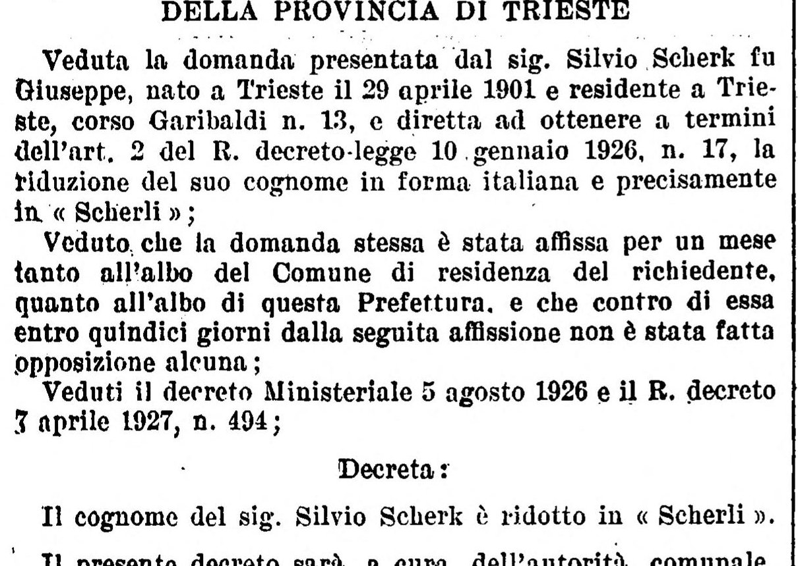
What the records give, in order:
- 1901 to 1930. Silvio Scherk, son of the late Giuseppe, born Trieste 29 April 1901, resident at corso Garibaldi 13, had his surname reduced to Scherli by the Prefect of Trieste (the state's chief administrator for the province); the decree is printed in the Gazzetta Ufficiale of 4 October 1930 [S38]. The 1934 city directory's index of changed names has "Scherk, ora Scherli" [S39]. The identification with the journalist rests on the first name, the city and the age at death (83 in March 1985) and is very probable rather than proven. seen
- 1933. L'Illustrazione Italiana of 15 January 1933 carries "Macabri riti funerari nell'India", "fotografie dell'autore", signed Silvio Scherl; Il Piccolo of 5 February 1933 notes that "il concittadino Silvio Scherl, che ha la fortuna, beato lui, di andare a spasso per il mondo" was publishing illustrated travel pieces in the Milan weekly and in La Scena Illustrata [S43]. He was therefore a travelling photographer seven years before the Ourang-Medan photographs appeared. seen
- 1940 to 1941. "Silvio Scherl-Scherli", the pre-decree and post-decree forms joined, signs "Il mistero dell'«Ourang-Medan»" and the "I drammi del mare" that followed it in Il Piccolo delle Ore Diciotto: the "Elenor Synt" mutiny (26 October), the yacht "Johore" (9 November), the "Geo. W. Macknight" (16 November), the Titanic (23 November), "A.N.N.A." (30 November), the "Diable Chain" (1 January 1941, the Canadian ship named in the Ourang-Medan's first paragraph), the Ourang-Medan sequel (5 February) and "Oubanghi-Chari" (24 April) [S1, S6, S9, S41]. Readers questioned the series within six weeks. On 27 November 1940 the editors answered a reader from Gorizia who had asked for the author's age and photograph: "l'età degli scrittori non si chiede", the paper does not print its writers' photographs, and "la storia del panfilo «Yohore» è vera, come sono veri tutti i racconti di Silvio Scherli" [S43]. seen for 16 and 26 October, 27 November and 5 February; the other titles reported from the anonymous 2024 blog on Scherli.
- 1943. Married Gabriella Zanini at San Giusto on 11 September 1943, the witnesses his brother, "capitano medico veterinario Vittorio Scherli", and a Captain Diodato Belohradsky; the civil-register column of 1 October 1943 gives his trade: "Scherli Silvio, ufficiale marconista mercantile", merchant-navy radio officer [S43]. seen. The 1940 text shows the same trade: a distress call in operators' abbreviations ("pse SW DH medico urgent"), the 600-metre band (the wavelength reserved for distress calls), an auxiliary set, "punto stimato" for dead reckoning, and the real radio-medical services of the day, Rome's Centro Internazionale Radio Medico and the German "Funkarzt" service through Elbe-Weser Radio. The 2024 blog adds, from crew lists on the genealogy site Ancestry that could not be opened for this report, that he was radio operator of the liners Conte di Savoia and Conte Grande in 1935 and Rex in 1938, and of the tanker Esso Pittsburgh in 1954 and 1955 [S41]. reported
- 1950. "Il marconista triestino Silvio Scherli ci manda dal porto spagnolo di Gijón questo racconto sulla tragedia del «Bruciatutto»", Il Piccolo, 30 December 1950: he was still at sea in December 1950 and still supplying the paper with sea stories [S43]. seen
- 1952 to 1954. The 1952 directory lists "Scherli Silvio, comm., via Vasari, 11", and at largo Barriera Vecchia 16 the widow Anna Scherli and "dott. Vittorio Scherli, capo Ufficio Veterinario" [S39]. On 25 February 1954 he wrote from that address, on letterhead "SILVIO SCHERLI · TRIESTE (213) · Largo Barriera Vecchia, 16", to Paul Hahn, president of the American Tobacco Company in New York, as "a free lance journalist collaborator to the leading European papers and magazines", offering for 780 dollars his "research material" on lung-cancer deaths in Italy, Germany, Austria and other countries; the company's reply of 26 March referred him to its London office. Both letters are in the tobacco-industry archive at the University of California, San Francisco [S40]. seen
- 1958 to 1985. A photograph of the Nagasaki peace statue credited "Copyright Silvio Scherli" in the Illustrated London News of 5 July 1958; a trade report on the port of Trieste in Export Trade, a New York trade paper, of 28 September 1959, which Wikipedia, Hargraves (2015) and the Skeptoid podcast (2020) have taken for an Ourang Medan article and which the one quotation of it in print shows to be a report on the port's trade; an article on the Nagasaki bomb in Il Piccolo of 9 August 1975; and the civil register in Il Piccolo of 9 March 1985, "Scherli Silvio, 83", died 7 March, with a family notice naming his wife Gabriella, a son and his brother Vittorio [S43, S44]. seen
The records describe one consistent career: a Triestine ship's radio officer with a camera, who published travel photography in the early 1930s, in the first autumn of Italy's war sold the evening paper a series of dramas of the sea written as reportage, saw the first cabled round the world, gave it a sequel presented as a wire report from Fiji, and eight years later sold the pair again, re-dated and re-located, to a Dutch weekly, insisting to its editors that it was true. His 1954 offer to sell "research material" to a tobacco company fits the same pattern. Nothing in his documented sea service (Italian Atlantic liners, a tramp steamer, an Esso tanker) puts him in the Solomons in November 1939, and no version names the ship he was supposedly serving in. The verdict rests on his texts rather than on his character: the three versions contradict one another on the year, the day, the finder, the ship's nationality, the hold that exploded and the number of dead, and no version has been matched to a documented ship.
8. The strongest counter-case, and what would overturn this
8.1 The case for a real kernel
The best argument for taking the story seriously is the author's own trade, since no document supports the story. If the anonymous 2024 blog's sketch of Scherli's career is right, he had been a wireless operator on Italian liners in the 1930s, and the technical details of his story are those a radio operator would know: the 600-metre distress band, the request to relay by short wave, the medical-advice service, the auxiliary transmitter. A seaman-journalist might have heard, in a mess room, of a derelict with a poisoned crew and built the tale on it. Brooks's 1948 article claims that "our research indicates this tragedy did happen" and that "Lloyd's says: For the moment it has us sunk as well", and the Dutch editor is said to have bought photographs as well as text.
Against this: the 1939 date is as unsupported as the 1947 one, and the argument does not depend on the registers. No version names the rescuing ship, her master, a port, an owner or a casualty number; the one finder that is named, the torpedo boat "W 716", did not exist; the same two photographs serve for events eight years apart, one of them said in 1940 to have been handed "in esclusività alla Marina da guerra americana"; and between his own three versions the author moved the SOS from 13 to 19 November, the explosion from hatch two to hold four, the ship from Australian to Dutch ownership and the dead from twelve to twenty-two. Brooks's "London reports" and "Lloyd's says" lines are unattributed claims in a Sunday supplement that also asserts sea lore about ships named for men. The registers contribute one point: no vessel of that name existed in the years the story spans, so any real incident behind the story concerned a ship of another name, and no version supplies one. In Scherli's own 1948 sequel the survivor anticipates the register check by explaining that ships of this kind "are no longer listed in Lloyd's Register". That a story explains why it cannot be verified is not evidence that the event occurred.
8.2 What would overturn the verdict
- An entry for a vessel named Ourang Medan (or Orang Medan) in any Register Book, the Netherlands or Netherlands-Indies ship registers, the Indonesian registry after 1945, or a Lloyd's casualty return, in any year from 1900 to 1950.
- A contemporary news report, from Batavia, Singapore, Manila, Suva, Honolulu or the Marshall Islands (under US administration in 1947), of a derelict found with a dead crew in November 1939 or June 1947, or of an explosion and loss with about 22 or 40 dead.
- A rescue recorded in the log or the Grace Line file of the Santa Juana ex Silver Star, or of any vessel, for June 1947.
- Scherli's 16 October 1940 text citing a documented source: a named rescue vessel that existed, a port, an owner, a Lloyd's casualty number.
- An Italian, Austrian or German printing before 16 October 1940 not by Scherli, which would at least show that he was retelling rather than inventing.
None of these has been found in the eighty-six years since 1940, although the first two can now be searched by anyone online. The verdict would also weaken, though not reverse, if the still-undigitised wartime Registers (1943 to 1946) or the unsearched Australian press (Trove, see section 10) showed a vessel or an incident that fits.
9. What is new here
The published investigations of the case are Roy Bainton's two-part Fortean Times article of 1999, Estelle Hargraves's blog post of 2015, Brian Dunning's Skeptoid episode of 2020, Theo Paijmans's Fortean Times article of 2021, the anonymous "Tragedies of the Sea" blog of 2024 and the Wikipedia articles in five languages. Measured against them, this report agrees with the main line of Paijmans's account and adds the following. Nothing here overturns what historians already think: the basic debunking is not new, and the additions strengthen it and date its elements.
9.1 New
- The Trieste texts in full (new evidence: primary texts not previously transcribed). The article of 16 October 1940, the editors' syndication note of 26 October 1940 and the sequel of 5 February 1941, read from the newspaper's own digital archive as page images (figures 1 to 6 show the first and the third) and transcribed. Paijmans had a library copy of the first and quoted its rescue boat; the sequel had been listed by the 2024 blog but not, so far as can be found, read. It shows that the sole survivor, the departure from Singapore, the falsified cargo, the nitroglycerine and cyanide, hold no. 4 and the rats are Scherli's own inventions of February 1941 rather than additions of 1948 or later, and that his three versions disagree on the date of the SOS, the ship's nationality, the exploding hold and the size of the cargo.
- Scherli in the records (new evidence: official and press records not previously cited). The surname decree of 1930 with his birth date, parentage and address; the 1933 travel photography; the editors' 1940 reply to a doubting reader; the 1943 marriage and the civil-register entry giving his trade as merchant-navy radio officer; the 1950 report from Gijón; the 1952 directory; the 1954 letters read in the original; the 1958 photo credit; his death on 7 March 1985. Paijmans wrote that he "did not leave much of a trace"; the 2024 blog had his birth "around 1901/1902" from crew lists. The often-repeated claim that he wrote about the ship again in Export Trade in 1959 rests on a misreading of a trade report on the port of Trieste.
- The earliest open-archive Dutch printing (new evidence, minor). The Leekster courant of 24 January 1948 with its explicit credit to Elsevier's Weekblad, and the April 1948 item in the Dutch magazine De schalmei that treats "het sensatieverhaal van de Ourang Medan" as common knowledge [S13, S17]; transcriptions of the Leekster and Semarang texts corrected against the page images (a 2025 Indonesian news feature quotes the Leekster text under the wrong title). Full-text searches on fifteen distinctive phrases found no other printing of the text in 1947 to 1949 among the papers digitised on Delpher.
- The registers, reproducibly (new analysis of known material: the absence was known, the volume-by-volume check and the Santa Juana entry are new). This check rules out the ship as described but cannot rule out an incident under another name. It consists of a volume-by-volume full-text check of seventeen Lloyd's Register volumes (fifteen for 1938/39 to 1950, and the 1930/31 and 1936 steamers volumes as controls) and of the Wreck Returns for 1946 to 1949, with page images and the scripts, and the Register entry that fixes the Silver Star as the Grace Line's Santa Cecilia of 1942, renamed Silver Star in 1946 and Santa Juana by mid-1947 (figure 13).
- Logged negatives (new searches). The Singapore and Malayan press for 1940 to 1949, the New Zealand press, the ANP radio bulletins, the Il Piccolo group's titles after February 1941 (no printing there in 1947; the first post-war Italian reappearance Paijmans found is of October 1948), and the Coast Guard Proceedings for the year after its editorial (no correction, no letter).
- The accretions dated (new analysis of known printings, plus one new witness, the Brazilian reprint). Each later "fact" tied to the printing that introduced it (section 6), in particular the derivation of the Coast Guard editorial of May 1952 from Win Brooks's Sunday-supplement text of October 1948, argued from shared wording, the observation that its "February 1948" is the month of the Dutch sequels rather than of any event, and the Brazilian Revista da Semana of May 1950, which names Scherli as narrator two years before the Coast Guard printed the story without a source.
9.2 Already established by others
- Scherli's authorship, the Trieste priority of October 1940, the AP cable of November 1940, the Elsevier's Weekblad printing of January 1948 and its editors' disclaimers: Paijmans 2021, which remains the essential account [S37].
- The Coast Guard editorial as unsigned and unsourced; the "CIA document" as a private citizen's letter to the CIA; the Silver Star's entry through Mielke 1954 and Bainton 1999: Hargraves 2015, Skeptoid 2020, Paijmans 2021 [S42, S31].
- The absence of the ship from Lloyd's Register, noted by Bainton and by later writers, now shown volume by volume from the scans [S31, S32].
- Taongi as an uninhabited atoll without a mission, and the non-existence of a torpedo boat "W 716": Skeptoid 2020, Paijmans 2021 [S42, S37].
10. What was not searched
- Australia and Fiji. Scherli's 1941 sequel makes the ship Australian, bound for a Western Australian port, and lands the survivor in Fiji. Trove, the Australian newspaper archive, requires a registered key for its search interface and its website is behind a bot gate, and the Fiji Times for 1939 to 1941 is not open online; neither was searched. An Australian-registered Ourang Medan, had one existed, would nonetheless be in Lloyd's Register, which lists every Commonwealth vessel over 100 tons, and no such entry exists.
- Trieste. The three Ourang-Medan pages of Il Piccolo and a dozen other issues were read; the rest of the "I drammi del mare" series and the 1950 "Bruciatutto" pieces are reported from the 2024 blog and from the archive's text layer rather than read from the page. La Stampa's historical archive, the Rome and Milan national libraries' newspaper portals and Google Books were unreachable or rate-limited.
- Austria, France, Britain. The Austrian National Library's ANNO viewer, the British Newspaper Archive and Gallica's full-text pages are gated; the Vienna and Karlsruhe printings of October 1940 are known from Paijmans, the Yorkshire Evening Post from clipping images, the two 7 Jours items from Gallica's search snippets.
- The Netherlands. Elsevier's Weekblad and Panorama are not digitised; the Elsevier text is known from the Leekster and Semarang reprints and from Paijmans. Mielke's 1954 booklet and Hulse's 1953 Fate article were not seen.
- Registers. The steamers-and-motorships volumes of Lloyd's Register for 1940 and for 1943 to 1946 are not online, nor is the 1942 sailing-vessels volume. A vessel that entered and left the Register only in those years would be missed by the Register check, though not by the 1946 to 1949 Wreck Returns or by the 1947 and 1948 volumes, which carry every ship afloat. wrecksite.eu, the online wreck database, could not be queried.
- Scherli. Ancestry's crew lists, the Trieste civil registers and any literary estate were not consulted; the crew-list career is reported from the 2024 blog and Skeptoid. The 1930 decree spells him "Scherk"; the identification is probable but not proven.
- Method. No paywall or bot gate was bypassed. Where a source could not be opened it is marked "reported" and attributed to the investigator who saw it.
11. Sources and reproducibility
Primary sources first, in the order of the paper trail; then registers and records; then the modern investigations. Delpher article identifiers open at https://www.delpher.nl/nl/kranten/view?identifier=… and their OCR at https://resolver.kb.nl/resolve?urn=…:ocr. Internet Archive items open at https://archive.org/details/….
- Silvio Scherl-Scherli, "Il mistero dell'«Ourang-Medan»", Le ultime notizie · Il Piccolo delle Ore Diciotto (Trieste), Wednesday 16 October 1940, p. 3. Archivio storico Il Piccolo, archivio.ilpiccolo.it, title TO00208776, issue 19401016, page 3; text layer retrieved through the archive's search endpoint, page PDF and image saved. Full transcription in the files saved with this report.
- Badische Presse (Karlsruhe), 18 and 19 October 1940. Reported by Paijmans 2021 [S37]; not seen.
- Welt-Blatt, Illustrierte Kronen-Zeitung and (Österreichische) Volks-Zeitung (Vienna), 20 to 29 October 1940, one citing "Piccolo di Trieste". Reported by Paijmans 2021 [S37]; ANNO is gated; not seen.
- Yorkshire Evening Post, Thursday 21 November 1940, p. 5, "Mystery S O S from Death Ship", Associated Press, dateline Trieste. British Newspaper Archive viewer bl/0000273/19401121/132/0005 (paywalled); transcribed from the clipping images in Hargraves 2015 [S42].
- Daily Mirror, Friday 22 November 1940, p. 11, "Crew Dies In S O S Mystery", Associated Press. Internet Archive item daily-mirror-fri-nov-22-1940; page image, figure 7.
- Il Piccolo delle Ore Diciotto, 26 October 1940, p. 3, editors' note above "I drammi del mare: l'ammutinamento dell'equipaggio della nave Elenor Synt". Archivio storico Il Piccolo, issue 19401026, page 3; page PDF saved and text layer.
- Silvio Scherl-Scherli, "Il mistero dell'«Ourang-Medan»", L'Illustrazione Italiana (Milan), vol. 67 no. 49, 8 December 1940, p. 846. Internet Archive item RAV0070589_1940_00049, leaf 51; figure 4.
- 7 Jours (Lyon), no. 13, 29 December 1940, "Le mystère de l'Ourang-Medan". Gallica ark:/12148/bpt6k32533027; confirmed through the ContentSearch API (full-text pages are gated).
- "Luce sulla misteriosa fine del piroscafo «Ourang Medan». Il ritrovamento di un superstite della tragica nave salvato dagli indigeni di un'isola della Malesia", unsigned, dateline "Viti Levu (Figi), 5", Il Piccolo delle Ore Diciotto, Wednesday 5 February 1941, p. 3. Archivio storico Il Piccolo, issue 19410205, page 3; page PDF and image saved; full transcription in the files saved with this report; figures 5 and 6.
- The China Mail (Hong Kong), 27 February 1941, p. 8, "Crew Dies In S.O.S. Mystery". Internet Archive item NPCM19410227; figure 8.
- 7 Jours, no. 45, 7 September 1941, "Le mystère de l'«Ourang-Medan» est éclairci". Gallica ark:/12148/bpt6k32533346; ContentSearch snippets; further details from Butziger 2013 (bermudatrianglecentral.blogspot.com, "Ourang Medan", November 2013) and Paijmans 2021.
- Elsevier's Weekblad (Amsterdam), 17 January 1948, p. 16, "Brand in Luik IV. Raadselachtige ondergang van de Ourang Medan"; 14 February 1948, p. 4; 28 February 1948, p. 19. Not digitised; reported by Paijmans 2021 [S37] and known from the reprints S13, S14, S16, S18.
- Leekster courant (Leek), Saturday 24 January 1948, p. 1, "Mysterie, dat de zee nimmer zal prijsgeven". Delpher MMRHCG04:235133008:mpeg21:a00006 (view); figures 9 and 10.
- De locomotief (Semarang), 3 February 1948, p. 3, "Een Mysterie van de Zee. Krampachtige Houding der Doden. De Raadselachtige Ondergang van de „Ourang Medan"". Delpher ddd:010862872:mpeg21:a0050 and a0051 (view); figures 11a to 11c.
- Editorial box of Elsevier's Weekblad, 14 February 1948, as reprinted in S16 and quoted by Paijmans 2021.
- De locomotief, 28 February 1948, p. 2, "Ondergang der „Ourang Medan". „Voor het Eerst Werd ik Bang"", with the editors' box. Delpher ddd:010862918:mpeg21:a0033 to a0036 (view); figures 12a and 12b.
- De schalmei (Amsterdam), vol. 19 no. 4, April 1948, p. 57. Delpher MMKB14:002764008:mpeg21:00011 (view).
- De locomotief, 13 March 1948, p. 2, "Mysterie der „Ourang Medan". De Dodelijke Zwavelzuur-Gassen Doortrokken het Gehele Schip", ending "Einde", with the editors' box "Fantasie of Realiteit?". Delpher ddd:010862945:mpeg21:a0036 and a0038, the ending a0042 (view).
- De West (Paramaribo), 16 April 1948, p. 3, "Schip vergaan". Delpher ddd:110637081:mpeg21:a0047 (view).
- Obersteirische Volkszeitung (Leoben), 24 July 1948. Reported by Paijmans 2021; not seen.
- Win Brooks, "Secrets of the Sea", The American Weekly, 3 October 1948 (Atlanta Constitution edition, Internet Archive item the-american-weekly-1948-10-03-dn-lg-ia) and 10 October 1948 (Albany Times-Union and others, item the-american-weekly-1948-10-10-darwin-ia). Transcription in the files saved with this report.
- Ennio Garieri, "Il mistero dell'Ourang Medan", L'Illustrazione del Popolo (Turin), 31 October 1948, p. 5. Reported by Paijmans 2021; not seen.
- "We Sail Together", unsigned editorial, Proceedings of the Merchant Marine Council, United States Coast Guard, vol. 9 no. 5, May 1952, p. 107. Coast Guard PDF via the Wayback Machine: Vol9_No5_May1952.pdf. Issues of March 1952 to March 1953 checked for corrections and letters: none.
- Wolf Kneip, "Navio fantasma. A narração de Silvio Scherli", Revista da Semana (Rio de Janeiro), 27 May 1950. Internet Archive item 1950-maio.
- Robert V. Hulse, "Death at Sea", Fate, June 1953. Reported (Skeptoid 2020, Paijmans 2021); not seen.
- Otto Mielke, Dampfer "Ourang Medan". Das Totenschiff in der Südsee, Anker-Hefte 1, Moewig, Munich 1954, 32 pp. Reported (Bainton 1999, Paijmans 2021; listed in the Deutsches Bücherverzeichnis); not seen.
- Amigoe di Curaçao, 7 January 1955, p. 2, "Panorama". Delpher ddd:010404481:mpeg21:a0051 (view).
- M. K. Jessup, The Case for the UFO (1955), Varo edition, Internet Archive item THECASEFORTHEUFOVaroEditionM.K.Jessup; Frank Edwards, Strangest of All (1956), "The Ship of Death", Internet Archive item StrangestOfAll.
- C. H. Marck Jr., letter to the Assistant Director, Central Intelligence Agency, 5 December 1959, CIA Reading Room CIA-RDP80R01731R000300010043-5.
- Vincent Gaddis, Invisible Horizons: True Mysteries of the Sea, Chilton, Philadelphia 1965; Ivan T. Sanderson, Invisible Residents (1970), Internet Archive item invisible-residents-ivan-sanderson.
- Roy Bainton, "A Cargo of Death", Fortean Times 125 and 126 (1999), as reposted by the New England Seafarers' Association, Wayback copy A cargo of death.
- Lloyd's Register of Shipping, Register Books, Lloyd's Register Foundation scans on the Internet Archive: items HECROS1936ST, HECROS1939ST, HECROS1939SV, HECROS1940SV, HECROS1941ST, ros-1941-sv, 1942-st-combined, HECROS1946SV, HECROS1947ST (Santa Juana entry, figure 13), HECROS1947SV, HECROS1948ST, HECROS1948SV, HECROS1949AL, HECROS1949MZ, HECROS1950AL, HECROS1950MZ, and the 1930/31 steamers volume (item Lloyd-Register-of-Shipping-1930-Steamers) as a second control: seventeen volumes in all, fifteen for 1938/39 to 1950 plus the two controls. Full-text search scripts and hit tables in the files saved with this report.
- Lloyd's Register, "Returns of Ships Totally Lost, Broken Up, &c." (Wreck Returns), quarterly, 1946 to 1949. Internet Archive item HECCR1890; extracted entries in the files saved with this report.
- Marhisdata, Stichting Maritiem-Historische Databank, marhisdata.nl; KPM fleet list (TheShipsList, Wayback copy).
- NewspaperSG, National Library Board Singapore, eresources.nlb.gov.sg/newspapers: full-text searches 1940 to 1949 logged in the files saved with this report. Papers Past, New Zealand's newspaper archive, through the DigitalNZ search interface: no hits.
- ANP radio bulletins 1937 to 1984, Delpher radiobulletins: no hits for "Ourang" or "Orang Medan".
- Theo Paijmans, "Death Ship: The Final Voyage of the Ourang Medan", Fortean Times 402, February 2021, pp. 32 to 37. Internet Archive item paijmans-ourang-medan.
- Gazzetta Ufficiale del Regno d'Italia, 4 October 1930, no. 232, decree of the Prefect of Trieste on Silvio Scherk, Internet Archive item 19301004_232, leaf 8; figure 14.
- Guida generale di Trieste 1934 and 1952, Internet Archive items Guida_TS-1934 and Guida_TS-1952 (full text).
- Silvio Scherli to Paul M. Hahn, American Tobacco Company, 25 February 1954, and the reply of 26 March 1954. UCSF Industry Documents Library, lrwp0215 and krwp0215.
- "Silvio Scherli", Silvio Scherli's "Tragedies of the Sea" (anonymous blog), August 2024, tragedies-of-the-sea.blogspot.com. Cites Ancestry crew and passenger lists that could not be opened for this report.
- Estelle Hargraves, "The Myth of the Ourang Medan Ghost Ship, 1940", The Skittish Library, 29 December 2015, skittishlibrary.co.uk; Brian Dunning, "The Death Ship SS Ourang Medan", Skeptoid 756, 1 December 2020, skeptoid.com; Wikipedia, "Ourang Medan" (English, German, French, Italian, Dutch), article and talk-page histories; CNBC Indonesia, 2025, feature quoting the Leekster text.
- Il Piccolo (Trieste) on the Internet Archive, items Piccolo_1933-02-05 (travel writings of Silvio Scherl), Piccolo_1940-11-27 (editors' reply), Piccolo_1943-09-12 (marriage notice), Piccolo_1943-10-01 (civil register, "ufficiale marconista mercantile"), Piccolo_1950-12-16 and Piccolo_1950-12-30 (the "Bruciatutto"), Piccolo_1963-03-06, Piccolo_1975-08-09, Piccolo_1985-03-09 (civil register and death notice); L'Illustrazione Italiana, 15 January 1933, item RAV0070589_1933_00003.
- Illustrated London News, 5 July 1958, p. 17, Internet Archive item sim_illustrated-london-news_1958-07-05_233_6213; E. B. Wigglesworth and W. Ashwell, Readings in Policy and Practice for International Business (1959), p. 379, quoting Export Trade of 28 September 1959 on "Scherli's report on Trieste" (Google Books id 3CYUAQAAMAAJ, snippet).
Code and data. Everything needed to repeat the searches is saved with this report: the Delpher search-and-OCR script, the Il Piccolo search script, the Lloyd's Register and Wreck Returns full-text scripts with their hit tables, the NewspaperSG and DigitalNZ search logs, the transcriptions of every text quoted (Italian, Dutch, English, Portuguese), the page images and the figure crops, and the six sets of search notes (historiography, registers, the Singapore and New Zealand press, the American and British press, Delpher, Scherli) on which this synthesis rests. Delpher's search interface for programs (SRU) behaves in one way that must be allowed for: a quoted multi-word phrase combined with a date filter silently returns zero, so date filtering must be done on the client.